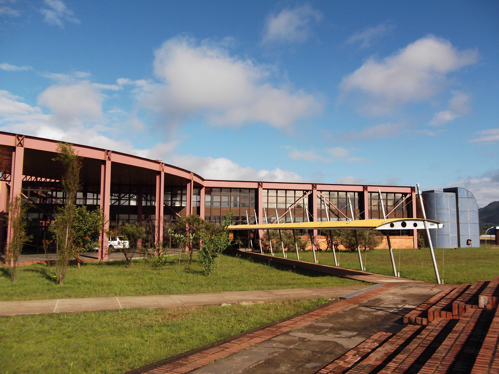

Sobre mim
Habilidades
Sobre mim:
Sou brasileira, nascida em Belo Horizonte/MG.
Formei em engenharia civil pela Universidade Federal de Ouro Preto em 2018, mas acabei não atuando na área, e trabalhei com gastronomia.
Tenho 31 anos, estou em transição de carreira, e estou estudando desenvolvimento web na Trybe.
Adoro assistir séries e filmes, ler, ouvir música e reunir os amigos.

Habilidades:
- Empatia
- Proatividade
- Boa comunicação
- Flexibilidade
- Organização
- Criatividade